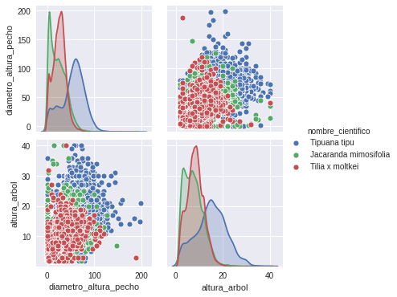

Contenidos | Anterior (4 Ordenar archivos en Python) | Próximo (6 Series temporales)
8.5 Introducción a Pandas
La biblioteca Pandas es una extensión de NumPy para manipulación y análisis de datos. En particular, ofrece estructuras de datos y operaciones para manipular tablas de datos (numéricos y de otros tipos) y series temporales. Se distribuye como software libre.
Ésta es una breve introducción a Pandas. Para información más completa, te recomendamos consultar la documentación oficial.
Esta biblioteca tiene dos tipos de datos fundamentales: los DataFrames que almacenan tablas de datos y las series que contienen secuencias de datos.
Esta sección tiene un breve video introductorio sobre las posibilidades que ofrece la biblioteca Pandas.
Lectura de datos
Pandas permite leer diversos formatos de tablas de datos directamente. Probá el siguiente código, para leer un archivo CSV:
import pandas as pd
import os
directorio = '../Data'
archivo = 'arbolado-en-espacios-verdes.csv'
fname = os.path.join(directorio,archivo)
df = pd.read_csv(fname)
La variable df es de tipo DataFrame y contiene todos los datos del archivo csv estructurados adecuadamente.
Con df.head() podés ver las primeras líneas de datos. Si a head le pasás un número como parámetro podés seleccionar cuántas líneas querés ver. Análogamente con df.tail(n) verás las últimas n líneas de datos.
>>> df.head()
long lat id_arbol ... origen coord_x coord_y
0 -58.477564 -34.645015 1 ... Exótico 98692.305719 98253.300738
1 -58.477559 -34.645047 2 ... Exótico 98692.751564 98249.733979
2 -58.477551 -34.645091 3 ... Exótico 98693.494639 98244.829684
3 -58.478129 -34.644567 4 ... Nativo/Autóctono 98640.439091 98302.938142
4 -58.478121 -34.644598 5 ... Nativo/Autóctono 98641.182166 98299.519997
Usando df.columns pandas te va a devolver un índice con los nombres de las columnas del DataFrame. Recordá que en la Sección 3.6 describimos la base de datos. A su vez, df.index te mostrará el índice. En este caso el índice es numérico y se corresponde con el número de la línea leida del archivo. En principio no es muy interesante para analizar cuestiones de árboles, simplemente tenemos las filas numeradas. Veremos otros ejemplos donde el índice puede contener información vital (una categoría, un timestamp, etc).
>>> df.columns
Index(['long', 'lat', 'id_arbol', 'altura_tot', 'diametro', 'inclinacio',
'id_especie', 'nombre_com', 'nombre_cie', 'tipo_folla', 'espacio_ve',
'ubicacion', 'nombre_fam', 'nombre_gen', 'origen', 'coord_x',
'coord_y'],
dtype='object')
>>> df.index
RangeIndex(start=0, stop=51502, step=1)
Otra herramienta útil para inspeccionar los datos recién levantados es describe(). Para ver mejor una parte, podemos seleccionar algunas columnas de interés antes de pedirle la descripción.
>>> df[['altura_tot', 'diametro', 'inclinacio']].describe()
altura_tot diametro inclinacio
count 51502.000000 51502.000000 51502.000000
mean 12.167100 39.395616 3.472215
std 7.640309 31.171205 7.039495
min 0.000000 1.000000 0.000000
25% 6.000000 18.000000 0.000000
50% 11.000000 32.000000 0.000000
75% 18.000000 54.000000 5.000000
max 54.000000 500.000000 90.000000
Selección
Una de las operaciones primitivas más importantes es la selección de fragmentos de las tablas de datos, ya sean filas, columnas o rangos de filas y columnas.
Por ejemplo con df['nombre_com'] veremos la columna (que es una serie) de nombres comunes de los árboles en la base. Podemos usar unique para ver una vez cada nombre:
>>> df['nombre_com'].unique()
array(['Washingtonia (Palmera washingtonia)', 'Ombú', 'Catalpa', 'Ceibo',
'Brachichiton (Árbol botella, Brachichito)', 'Álamo plateado',
'Acacia de constantinopla', 'Acacia', 'Roble sedoso (Grevillea)',
...
'Jazmín del Paraguay', 'Plumerillo rojo', 'Árbol fuccia',
'Canela de venado', 'Boj cepillo', 'Caranday'], dtype=object)
Podemos preguntar cuáles se llaman de cierta manera ('Ombú' en este caso), como hacíamos con los ndarrays en numpy:
>>> df['nombre_com'] == 'Ombú'
0 False
1 False
2 False
3 True
...
Observá que esto generó una serie. Podemos sumar los True de esta serie para contar la cantidad de Ombús:
>>> (df['nombre_com'] == 'Ombú').sum()
590
Si queremos hacer lo mismo para otras especies podemos usar value_counts()
>>> cant_ejemplares = df['nombre_com'].value_counts()
>>> cant_ejemplares.head(10)
Eucalipto 4112
Tipa blanca 4031
Jacarandá 3255
Palo borracho rosado 3150
Casuarina 2719
Fresno americano 2166
Plátano 1556
Ciprés 1467
Ceibo 1149
Pindó 1068
Name: nombre_com, dtype: int64
De esta forma obtenemos, en orden decreciente, los nombres comunes y las cantidades de las especies más frecuentes en la base de datos.
Filtros booleanos
La serie booleana que obtuvimos con df['nombre_com'] == 'Ombú' puede usarse para seleccionar esas filas del DataFrame. Probemos con Jacarandá:
>>> df_jacarandas = df[df['nombre_com'] == 'Jacarandá']
Análogamente, podemos seleccionar algunas columnas de interés y generar vistas (ojo, en estos casos no estamos copiando la información):
>>> cols = ['altura_tot', 'diametro', 'inclinacio']
>>> df_jacarandas = df_jacarandas[cols]
>>> df_jacarandas.tail()
altura_tot diametro inclinacio
51104 7 97 4
51172 8 28 8
51180 2 30 0
51207 3 10 0
51375 17 40 20
>>> df_jacarandas.describe()
altura_tot diametro inclinacio
count 3255.000000 3255.000000 3255.000000
mean 10.369585 28.804301 6.549923
std 5.905744 19.166388 8.459921
min 1.000000 1.000000 0.000000
25% 6.000000 14.000000 0.000000
50% 10.000000 25.000000 4.000000
75% 15.000000 41.000000 10.000000
max 49.000000 159.000000 70.000000
Observá que cuando le pedimos los últimos datos de df_jacarandas nos mostró los últimos 5 jacarandás de la base de datos, respetando los números de índice de la tabla original (..., 51207, 51375).
Si vas a querer modificar df_jacarandas es conveniente crear una copia de los datos de df en lugar de simplemente una vista. Esto se puede hacer con el método copy() como en el siguiente ejemplo.
>>> df_jacarandas = df[df['nombre_com'] == 'Jacarandá'][cols].copy()
Scatterplots
Pandas también permite hacer gráficos bonitos. Es realmente sencillo:
df_jacarandas.plot.scatter(x = 'diametro', y = 'altura_tot')
Hay otro módulo para hacer gráficos que interactúa muy bien con pandas y se llama Seaborn. Está basado en matplotlib, y ofrece una interfaz de alto nivel para realizar gráficos estadísticos atractivos e informativos. En criollo: "usar pandas para manejar los datos y seaborn para visualizarlos, es la posta".
Fijate que seaborn entiende los DataFrames y las columnas y su sintaxis es muy similar a la de pandas:
import seaborn as sns
sns.scatterplot(data = df_jacarandas, x = 'diametro', y = 'altura_tot')
Filtros por índice y por posición
Como ya mencionamos, el índice de df no tiene una semántica interesante. Veamos, en cambio, que la serie que generamos con cant_ejemplares = df['nombre_com'].value_counts() sí lo tiene:
>>> cant_ejemplares.index
Index(['Eucalipto', 'Tipa blanca', 'Jacarandá', 'Palo borracho rosado',
'Casuarina', 'Fresno americano', 'Plátano', 'Ciprés', 'Ceibo', 'Pindó',
...
'Naranjo dulce', 'Peltophorum', 'Ligustrina de California',
'Afrocarpus', 'Caranday', 'Esterculea', 'Boj cepillo', 'Sesbania',
'Ligustrum', 'Árbol del humo'],
dtype='object', length=337)
cant_ejemplares es una serie (es como un DataFrame de una sola columna). Tiene los nombres de las especies como índice y sus respectivas cantidades como dato asociado.
Podemos acceder a una fila de un DataFarme o una Serie tanto a través de su posición como a través de su índice. Para acceder con el índice usá loc[] como en los siguientes ejemplos:
>>> df.loc[165]
long -58.4684
lat -34.6648
id_arbol 166
altura_tot 5
diametro 10
inclinacio 0
id_especie 11
nombre_com Jacarandá
nombre_cie Jacarandá mimosifolia
tipo_folla Árbol Latifoliado Caducifolio
espacio_ve INDOAMERICANO
ubicacion LACARRA, Av. - ESCALADA, Av. - CASTAÑARES, Av....
nombre_fam Bignoniáceas
nombre_gen Jacarandá
origen Nativo/Autóctono
coord_x 99534.3
coord_y 96061.8
Name: 165, dtype: object
>>> cant_ejemplares.loc['Eucalipto']
4112
Para acceder por número de posición usá iloc, como se muestra a continuación.
>>> df_jacarandas.iloc[0]
altura_tot 5
diametro 10
inclinacio 0
Name: 165, dtype: int64
Observá que esto nos devuelve los datos de la primera fila de df_jacarandas que corresponde al índice 165 (lo dice en la última línea). También podemos acceder a rebanadas (slices) usando iloc:
>>> cant_ejemplares.iloc[0:3]
Eucalipto 4112
Tipa blanca 4031
Jacarandá 3255
Name: nombre_com, dtype: int64
Por otra parte, podemos seleccionar tanto filas como columnas, si separamos con comas las respectivas selecciones:
>>> df_jacarandas.iloc[-5:,2]
51104 4
51172 8
51180 0
51207 0
51375 20
Name: inclinacio, dtype: int64
Esto nos devuelve los datos correspondientes a las últimas 5 filas y a la tercera columna ('inclinacio'). Fijate que siempre vienen acompañados del índice.
Selección de una columna
Si queremos seleccionar una sola columna podemos especificarla por medio de su nombre. Recordemos que al tomar una sola columna obtenemos una serie en lugar de un DataFrame:
>>> df_jacarandas_diam = df_jacarandas['diametro']
>>> type(df_jacarandas)
pandas.core.frame.DataFrame
>>> type(df_jacarandas_diam)
pandas.core.series.Series
Series temporales en Pandas
Pandas tiene un gran potencial para el manejo de series temporales. Es muy sencillo crear índices con fechas y frecuencias seleccionadas.
>>> pd.date_range('20200923', periods = 7)
DatetimeIndex(['2020-09-23', '2020-09-24', '2020-09-25', '2020-09-26',
'2020-09-27', '2020-09-28', '2020-09-29'],
dtype='datetime64[ns]', freq='D')
>>> pd.date_range('20200923 14:00', periods = 7)
DatetimeIndex(['2020-09-23 14:00:00', '2020-09-24 14:00:00',
'2020-09-25 14:00:00', '2020-09-26 14:00:00',
'2020-09-27 14:00:00', '2020-09-28 14:00:00',
'2020-09-29 14:00:00'],
dtype='datetime64[ns]', freq='D')
>>> pd.date_range('20200923 14:00', periods = 6, freq = 'H')
DatetimeIndex(['2020-09-23 14:00:00', '2020-09-23 15:00:00',
'2020-09-23 16:00:00', '2020-09-23 17:00:00',
'2020-09-23 18:00:00', '2020-09-23 19:00:00'],
dtype='datetime64[ns]', freq='H')
Luego, podés usar esos índices junto con datos para armar series temporales o DataFrames:
>>> pd.Series([1, 2, 3, 4, 5, 6], index = pd.date_range('20200923 14:00', periods = 6, freq = 'H'))
2020-09-23 14:00:00 1
2020-09-23 15:00:00 2
2020-09-23 16:00:00 3
2020-09-23 17:00:00 4
2020-09-23 18:00:00 5
2020-09-23 19:00:00 6
Freq: H, dtype: int64
Caminatas al azar
Volviendo al tema de las caminatas al azar, podemos hacer una caminata de dos horas dando un paso por minuto a partir del comienzo de esta clase con el siguiente comando:
import numpy as np
idx = pd.date_range('20200923 14:00', periods = 120, freq = 'min')
s1 = pd.Series(np.random.randint(-1,2,120), index = idx)
s2 = s1.cumsum()
Observá que estamos usando random del módulo numpy, no de random. La función np.random.randint(-1,2,120) genera un array de longitud 120 con valores -1, 0, 1 (no incluye extremo derecho del rango de valores).
Podemos ver el gráfico sencillamente:
s2.plot()
O usar una media móvil (rolling mean) para suavizar los datos:
w = 5 # ancho en minutos de la ventana
s3 = s2.rolling(w).mean()
s3.plot()
Podés ver ambas curvas en un mismo gráfico para ver más claramente el efecto del suavizado:
df_series_23 = pd.DataFrame([s2, s3]).T # armo un dataframe con ambas series
df_series_23.plot()
Fijate que los datos de la curva suavizada empiezan más tarde, porque al principio no hay datos sobre los cuales hacer promedio. El parámetro min_periods = 1 del método rolling te permite controlar esto. Probalo.
Ejemplo: 12 personas caminando 8 horas
En el siguiente ejemplo creamos un índice que contenga un elemento por minuto a partir del comienzo de la clase y durante 8 horas. Armamos también una lista de nombres.
horas = 8
idx = pd.date_range('20200923 14:00', periods = horas*60, freq = 'min')
nombres = ['Pedro', 'Santiago', 'Juan', 'Andrés','Bartolomé','Tiago','Isca','Tadeo','Mateo','Felipe','Simón','Tomás']
Luego usamos el módulo random de numpy para generar pasos para cada persona a cada minuto. Los acumulamos con cumsum y los acomodamos en un DataFrame, usando el índice generado antes y poniéndoles nombres adecuados a cada columna:
df_walks = pd.DataFrame(np.random.randint(-1,2,[horas*60,12]).cumsum(axis=0), index = idx, columns = nombres)
df_walks.plot()
Ahora suavizamos los datos, usando min_periods para no perder los datos de los extremos.
w = 45
df_walk_suav = df_walks.rolling(w, min_periods = 1).mean() # datos suavizados
nsuav = ['S_' + n for n in nombres]
df_walk_suav.columns = nsuav # cambio el nombre de las columnas
# para los datos suavizados
df_walk_suav.plot()
Guardando datos
Guardar una serie o un DataFrame en el disco es algo realmente sencillo. Probá, por ejemplo, el efecto del comando df_walk_suav.to_csv('caminata_apostolica.csv').
Incorporando el Arbolado lineal
Ejercicio 8.7: Lectura y selección
Vamos a trabajar ahora con el archivo 'arbolado-publico-lineal-2017-2018.csv'. Descargalo y guardalo en tu directorio '../Data/'.
Levantalo y armá un DataFrame df_lineal que tenga solamente las siguiente columnas:
cols_sel = ['nombre_cientifico', 'ancho_acera', 'diametro_altura_pecho', 'altura_arbol']
Imprimí las diez especies más frecuentes con sus respectivas cantidades.
Trabajaremos con las siguientes especies seleccionadas:
especies_seleccionadas = ['Tilia x moltkei', 'Jacaranda mimosifolia', 'Tipuana tipu']
Una forma de seleccionarlas es la siguiente:
df_lineal_seleccion = df_lineal[df_lineal['nombre_cientifico'].isin(especies_seleccionadas)]
Ejercicio 8.8: Boxplots
El siguiente comando realiza un boxplot de los diámetros de los árboles agrupados por especie.
df_lineal_seleccion.boxplot('diametro_altura_pecho', by = 'nombre_cientifico')
Realizá un gráfico similar pero de los altos en lugar de los diámetros de los árboles.
Ejemplo de pairplot
Otro gráfico interesante que resume muy bien la información es el pairplot de seaborn que es una grilla cuadrada de subplots.
Probá el siguiente código:
sns.pairplot(data = df_lineal_seleccion[cols_sel], hue = 'nombre_cientifico')

El gráfico va a tener una fila (y columna) por cada variable numérica en el DataFrame pasado como data. En la diagonal del gŕafico, va a haber kdeplots (kernel density estimation plots, una versión suavizada de los histogramas) y fuera de la diagonal scatterplots combinando todos los pares de variables (cada combinación aparece dos veces, una sobre y otra debajo de la diagonal).
El hue selecciona la variable categórica a usar para distinguir subgrupos y asociarles colores. En la diagonal de este ejemplo (y en los scatterplots también) se ve por ejemplo que las Tipas suelen ser más anchas y más altas que los Tilos y los Jacarandás.
Pregunta: ¿Por qué el ancho_acera no tiene lugar en el gráfico?
Te recomendamos pegarle una mirada a esta página donde vas a poder ver un poco más sobre el potencial de seaborn.
Ejercicio 8.9: Comparando especies en parques y en veredas
Al comienzo de la materia estuvimos trabajando con el dataset de árboles en parques. Ahora estuvimos analizando otro dataset: el de árboles en veredas. Ahora queremos estudiar si hay diferencias entre los ejemplares de una misma especie según si crecen en un sitio o en otro. Queremos hacer un boxplot del diámetro a la altura del pecho para las Tipas (su nombre científico es tipuana tipu), que crecen en ambos tipos de ambiente. Para eso tendremos que juntar datos de dos bases de datos diferentes.
Nos vamos en meter en un lío. El GCBA usa en un dataset 'altura_tot', 'diametro' y 'nombre_cie' para las alturas, diámetros y nombres científicos de los ejemplares, y en el otro dataset usa 'altura_arbol', 'diametro_altura_pecho' y 'nombre_cientifico' para los mismos datos.
Es más, los nombres científicos varían de un dataset al otro. 'Tipuana Tipu' se transforma en 'Tipuana tipu' y 'Jacarandá mimosifolia' en 'Jacaranda mimosifolia'. Obviamente son cambios menores pero suficientes para desalentar al usuarie desprevenide.
En este ejercicio te proponemos los siguientes pasos para comparar los diámetros a la altura del pecho de las tipas en ambos tipos de entornos. Guardá este trabajo en un archivo arbolado_parques_veredas.py.
- Abrí ambos datasets a los que llamaremos df_parques y df_veredas.
- Para cada dataset armate otro seleccionando solamente las filas correspondientes a las tipas (llamalos df_tipas_parques y df_tipas_veredas, respectivamente) y las columnas correspondientes al diametro a la altura del pecho y alturas. Hacelo como copias (usando
.copy()como hicimos más arriba) para poder trabajar en estos nuevos dataframes sin modificar los dataframes grandes originales. Renombrá las columnas que muestran la altura y el diámetro a la altura del pecho para que se llamen igual en ambos dataframes, para ello explorá el comandorename. - Agregale a cada dataframe (df_tipas_parques y df_tipas_veredas) una columna llamada 'ambiente' que en un caso valga siempre 'parque' y en el otro caso 'vereda'.
- Juntá ambos datasets con el comando
df_tipas = pd.concat([df_tipas_veredas, df_tipas_parques]). De esta forma tenemos en un mismo dataframe la información de las tipas distinguidas por ambiente. - Creá un boxplot para los diámetros a la altura del pecho de la tipas distinguiendo los ambientes (
boxplot('diametro_altura_pecho',by = 'ambiente')). - Repetí para alturas.
- ¿Qué tendrías que cambiar para repetir el análisis para otras especies? ¿Convendría definir una función?
Contenidos | Anterior (4 Ordenar archivos en Python) | Próximo (6 Series temporales)